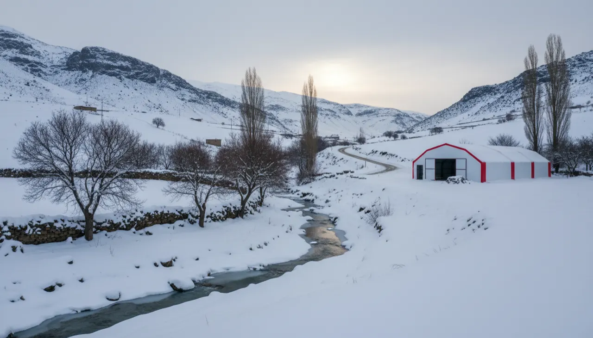

Bitlis Tavuk Çadırı
Bitlis, Türkiye'nin kar rekortmeni illerinden; kent merkezinde kar metrelerce birikebiliyor. Böyle bir yerde tavuk çadırında ilk konuşulacak konu çatının o yükü nasıl taşıyacağı, ardından da içeride nemin nasıl yönetileceğidir.

Bitlis'te kış, takvimin söylediğinden erken gelir ve geç gider. Rahva düzlüğünde rüzgâr, dar vadi içindeki kent merkezinde ise üst üste yığılan kar belirler günü. Van Gölü kıyısına, Ahlat–Adilcevaz–Tatvan hattına indikçe hava biraz yumuşar ama kar yükü meselesi ilin hemen her köşesinde masanın ortasında durur. Çadır kümes kurmayı düşünüyorsanız işe ısınmayla değil, çatının o karı nasıl kaldıracağıyla başlamak gerekir.
Biz tavuk çadırını tam da bu tür yerler için kemerli iskeletle, katmanlı kuruyoruz. Kemerli form karı üstünde biriktirmeden yanlara akıtacak biçimde çalışır; Bitlis'in metrelerce kar biriken kışında satın alırken bakılacak ilk şey de budur. Bu ilde 4 kat yalıtım seçeneğini öneriyoruz — üç kat çoğu ili idare eder ama Bitlis'in kar ve rutubet birlikte gelen kışı dördüncü katmanı hak eder. Sebebini aşağıda tek tek açıyoruz.
Üretim ve sevkiyat İstanbul merkezli; Bitlis'te şubemiz yok, kurulum ekibi buraya İstanbul'dan geliyor. Yolun uzunluğu teslim gününü etkiler, fiyatı ise değiştirmez. Aşağıda hem iklimin yapıya nasıl yansıdığını, hem 1.530 kilometrelik bu mesafenin pratikte ne demek olduğunu somut biçimde anlatıyoruz.
Bitlis'de çadır kümes kurulumunda çatı formu neden hayati
Bu kadar kar alan bir ilde çadır kümesin ömrünü çatı belirler. Islanmış, sıkışmış kar metrekareye yüzlerce kilo bindirir; düz ya da hafif eğimli bir örtü bu yükün altında zamanla bel verir. Bizim çadırlarda iskelet kemerli (makas) formda üretilir. Bu form yükü profil boyunca dağıtır, eğim sayesinde de karın büyük kısmının kendi ağırlığıyla yanlara kaymasına yol açar. Standart bir çadıra göre çok daha dayanıklı olmasının bir sebebi bu geometridir.
Yine de Bitlis kışında iş sadece iskelete bırakılmaz. Ocak–şubatta art arda yağışlı geçen haftalarda çatının omuz kısımlarında biriken karı gözden geçirmenizi söyleriz; kaymayan kar orada birikirse yük tek noktada toplanır. Kurulumda çatının yönünü de bunun için hâkim rüzgâra göre konuşuruz — Rahva tarafında rüzgârın bir yönü bellidir, kar orada belli bir cepheye yaslanır. Doğal afet ve kullanıcı hatası kapsam dışı kaldığından, kışlık bakım alışkanlığı burada iskeletin dayanımını tamamlayan asıl güvencedir.
4 kat yalıtım, yoğuşma ve amonyak dengesi
Bitlis'in kışı kuru ayazdan çok, kar ve rutubetin bir arada olduğu bir kıştır. Bu da kümeste asıl savaşı yoğuşmaya karşı vereceğiniz anlamına gelir; salt soğuk, sanılanın aksine ikinci sıradadır. İçerideki ılık ve nemli hava soğuk bir yüzeye değdiği anda su damlasına döner; damlayan su altlığı ıslatır, ıslak altlık amonyağı azdırır, ıslanan tüy yalıtma özelliğini kaybeder. Zincir buradan bozulur.
Dört kat yalıtımın işi, iç yüzeyi ılık tutup bu yoğuşmanın başlayacağı soğuk zemini ortadan kaldırmaktır. Katmanlar termosun çeperi gibi çalışır: kışın sürünün kendi ısısını içeride tutar, yazın ise Van Gölü kıyısında öğle güneşinin ısıttığı havayı dışarıda bırakır. Bitlis'te üç kat yerine dördü öneriyoruz; 7x10 ölçüde aradaki fark oldukça küçük, o katmanın karşılığını ise her sabah sürünün rahatında görürsünüz. Güncel katman farkını fiyatlar sayfasında görebilirsiniz.
Bir uyarı: ısı kaçmasın diye her açıklığı kapatmak en sık yapılan hatadır. Kapalı kümeste amonyak birikir, sabah içeri girdiğinizde gözünüz yanar — o havada tavuklarınız bütün gece kalmıştır. Çözüm, tavuk hizasında cereyan yaratmadan üst seviyeden sürekli ve kısık bir hava değişimi bırakmaktır. Kalabalık sürülerde bu dengeyi kolaylaştıran fan sistemini talep eden müşterilere birlikte kuruyoruz.
İstanbul'dan Bitlis'e çadır kümes kurulumu nasıl işliyor
Bitlis, İstanbul'a yaklaşık 1.530 km, karayoluyla 22 saat civarında bir mesafede. Bu gerçeği saklamıyoruz çünkü işin planını doğrudan etkiler. Çadır İstanbul'daki üretimde ölçüye göre hazırlanır, sökülü hâlde yüklenir ve kurulum ekibiyle birlikte sahaya iner. Bitlis'te depomuz ya da bayimiz yok; gelen ekip merkezden gelir.
Mesafe ve sezon yoğunluğu teslim gününü biraz oynatabilir, o yüzden kesin günü siparişte baştan netleştiririz — özellikle Bitlis–Tatvan ve Kuzu geçidi çevresinde yolların kar yüzünden kapanabildiği aylarda planı buna göre kurarız. Yılın büyük bölümünde kurulum için zemininizin erişilebilir ve düz olması işi hızlandırır; kar mevsiminde sahaya çıkmadan önce yol durumunu birlikte teyit ederiz. Sizin tarafınızda kalan tek hazırlık zemin, su ve elektrik altyapısıdır. Hangi illere nasıl gittiğimizi kurulum bölgeleri sayfasında görebilirsiniz.
Bitlis tarımında kanatlının yeri
Bitlis denince akla önce arıcılık, cevizcilik ve küçükbaş hayvancılık gelir; Adilcevaz cevizi ilin markası sayılır, Van Gölü kıyısındaki Ahlat–Adilcevaz–Tatvan hattı da tarımsal olarak en hareketli kesimdir. Kanatlı üretimi burada ağırlıkla aile işletmeleri ölçeğinde yürür; büyük entegre tesislere il genelinde pek rastlanmaz. Çoğu üretici için doğru başlangıç, evin ve köyün ihtiyacını karşılayıp fazlasını yerelde değerlendirecek, ölçülü ve yönetilebilir bir kapasitedir.
Küçük ve orta ölçekte işi kışa hazır kurmak daha kolaydır. Yumurtayı Tatvan ya da Ahlat pazarında, komşuya, yerel esnafa satan bir üretici için önemli olan, sürünün kışı sağlıklı çıkarması ve verimin düşmemesidir. Yalıtımlı bir çadırda bu, betona gömülmeden ve büyük yatırım yapmadan mümkün. Şunu da ekleyelim: Ahlat ve Adilcevaz gibi göl kıyısı ilçelerde kış, iç kesimdeki Hizan ya da kent merkezine göre bir tık daha ılıman geçer; buralarda kümes yerini seçerken kuzey rüzgârından korunaklı, güneşi gün boyu alan bir cephe verimi görünür biçimde tutar.
Bitlis'de tavuk çadırı ölçüleri, kapasite ve fiyatı
Ölçüyü tavuk sayısından geriye doğru hesaplıyoruz; kaç tavuk bakacaksanız çadırın metrekaresi ona göre çıkar. Gezen sistemde hayvana daha çok alan bıraktığınız için kapasite bir miktar düşer. Sürüyü sıkıştırmak kışın nemi ve amonyağı doğrudan artırdığından, ölçüyü cömert tutmak Bitlis gibi bir ilde bilhassa işe yarar — dört kat yalıtımla kazandığınızı kalabalık bir sürüde geri vermeyin.
Aile işletmesi ölçeğinde en çok konuşulan iki kademe, 500 tavukluk 7x10 ve 1.000 tavukluk 7x20 çadırdır. Bitlis'te ikisini de 4 kat yalıtımla öneriyoruz. Yemlik, nipel suluk, folluk ve fan gibi ekipmanı isteğe göre birlikte teslim ediyoruz. Bütün ölçülerin 3 ve 4 kat karşılaştırmalı güncel fiyat listesini fiyatlar sayfasında görebilirsiniz.
Bitlis için modeller
Fiyatlara nakliye ve kurulum dahildir; Bitlis teslimatı da ücretsizdir. 8 farklı ölçünün tamamı için fiyat tablosuna bakabilirsiniz.
Teknik künye
Bitlis dahil 81 ilde aynı üretim standardı; nakliye ve kurulum her ölçüde fiyata dahildir. Ölçü ve yalıtım katı kapasitenize göre belirlenir.
- İskelet
- 40x40 mm / 2 mm çelik makas profil
- Branda
- 650 g/m² TSE damgalı, UV dayanımlı, alev yürütmez
- İç astar
- 180 g/m² antibakteriyel, yıkanabilir
- Yalıtım
- Alüminyum bizafol — 3 veya 4 kat
- Dayanıklılık
- Standart çadırlara göre 3 kat (kar, rüzgâr, yağış)
- Garanti
- 2 yıl üretim garantisi
- Teslim
- Sipariş sonrası ~10 gün, kurulu
- Kapasite
- m² başına ~7 tavuk (70 m² ≈ 500 tavuk)
Bitlis için sık sorulanlar
Bitlis'in metrelerce karına bu çadır dayanır mı?
Bitlis için 3 kat mı 4 kat yalıtım almalıyım?
Tatvan ve Ahlat'a kadar kurulum ekibi geliyor mu, ne kadar sürer?
Kurulum için beton zemin şart mı?
Bitlis'e nakliye ve kurulum ücretli mi?
Adilcevaz cevizciliğinin yanında küçük bir kümesle yumurta üretmek mantıklı mı?
İşinize yarayacak rehberler
Bitlis projenizi birlikte planlayalım
Kapasitenizi ve kurulumu düşündüğünüz ilçeyi yazın; ölçüyü, yalıtımı ve teklifi aynı gün netleştirelim.
WhatsApp'tan yazın